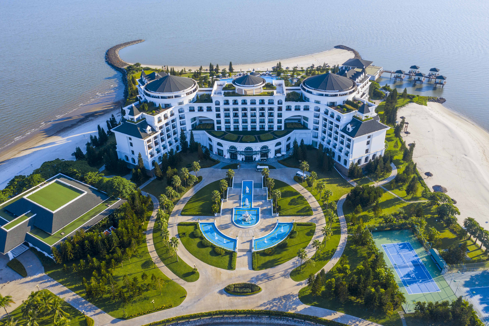
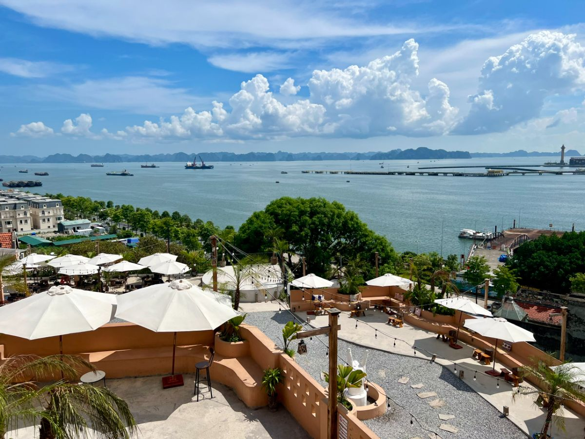
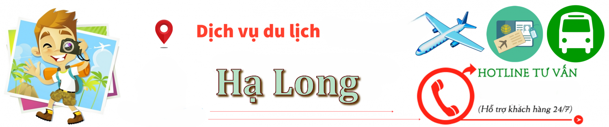

Du Lịch Hạ Long
Hướng dẫn & Tư vấn cho cộng đồng người Việt tại Fairfax
Thời Điểm
☀️ Tháng 10 – Tháng 4 Trời se lạnh, ít mưa, phù hợp tham quan & chụp ảnh
☀️ Tháng 5 – Tháng 9 Nắng đẹp, biển xanh, thích hợp nghỉ dưỡng, tắm biển (nhưng có thể mưa bão)
👉 Tốt nhất: Tháng 10 đến tháng 12 – thời tiết khô ráo, không quá đông khách.
🌟 Điểm đến nổi bật ở Hạ Long
🛥️ Vịnh Hạ Long Du thuyền tham quan hàng ngàn đảo đá, hang động
⛴ Du thuyền nghỉ đêm 5 sao Indochina Sails, Athena Cruise, Paradise Cruiseo
🏞 Hang Sửng Sốt, Hang Đầu Gỗ, Động Thiên Cung Các hang động đẹp nhất Vịnh
🏝 Đảo Titop, Bãi Cháy Tắm biển, leo núi, ngắm toàn cảnh
🎡 Sun World Hạ Long Complex Cáp treo Nữ Hoàng, công viên nước, Dragon Park
⛩ Chùa Long Tiên, Bảo tàng Quảng Ninh Văn hoá & lịch sử địa phương

🛏️ Khách sạn & homestay
⭐ 5 sao Vinpearl Resort & Spa Hạ Long (resort nằm trên đảo), FLC Grand Hotel, Royal Lotus
🏝 4 sao view biển Muong Thanh Luxury, Novotel Ha Long
🏠 Homestay đẹp giá hợp lý Deja Vu House, Halong Ginger Homestay, Banana and Rose Homestay
🚢 Du thuyền nghỉ đêm Orchid Cruise, Stellar Cruise, Mon Cheri Cruise

🍜 Ẩm thực Hạ Long
🦀 Chả mực Hạ Long Ăn kèm xôi trắng hoặc bánh cuốn – nổi tiếng nhất cả nước
🦪 Hải sản tươi sống Hàu nướng, sò điệp, tu hài, ghẹ hấp
🥣 Bún hải sản, bánh đa cua Hạ Long Quán ăn sáng địa phương
🦐 Sam biển (nướng, gỏi, xào) Đặc sản hiếm tại Bãi Cháy
🍹 Cà phê view biển Rock House, Wander Station, Rooftop Coffee Marina Bay

Dịch vụ hỗ trợ
Là nơi bạn có thể liên hệ để được hỗ trợ, tư vấn, phản ánh hoặc giải quyết các vấn đề liên quan đến hoạt động du lịch khi đến Hạ Long.
☎️ Trung tâm hỗ trợ du khách TP. Hạ Long 0203 382 9086 hoặc hotline 0912 319 799
🚓 Công an TP. Hạ Long 0203 3832 253
🚑 Bệnh viện Đa khoa Quảng Ninh 0203 3825 266
🌐 Tổng đài du lịch Quảng Ninh 1800 555 882
💡 lưu ý:
⛴️ Nên đặt vé du thuyền trước, nhất là mùa cao điểm.
🚗 Di chuyển từ Hà Nội nên đặt xe limousine đi Hạ Long (khoảng 2.5–3 tiếng).
🌦 Xem dự báo thời tiết kỹ trước khi đặt tour đảo hoặc tàu.
🛥 Mang theo chứng minh thư/hộ chiếu khi đi tàu.
💸 Một số tour bao gồm bữa ăn – hãy kiểm tra kỹ giá trọn gói.